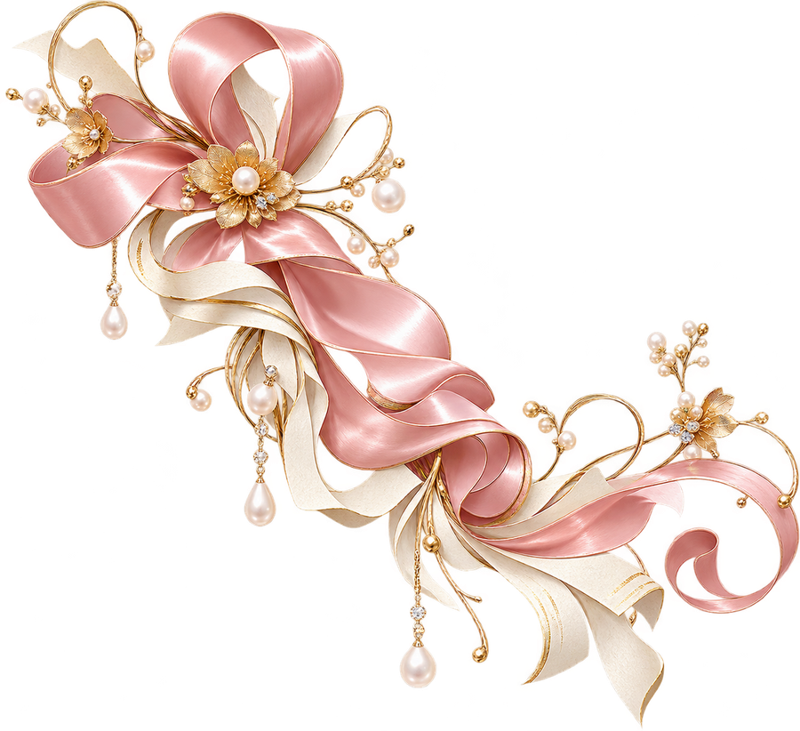

庭の花を、一輪飾る
庭の花を、小さな瓶に飾る。子どもの頃からの習慣は、日常を少し特別にする楽しみでした。
この案はキャラクターを使いません。
人物・経歴はすべて架空です。装飾は生成イラスト、ご本人の写真は未提供の枠で示しています。
B03 暮らしの雑誌
人生の履歴書
たちばな はな / 約80年の物語

趣味・大切な品などの写真
ご提供後に差し込みます
巻頭特集 / 私の暮らしをつくったもの
きれいだな、と思う心を大切に。
趣味・大切な品などの写真
ご提供後に差し込みます
庭の花を、小さな瓶に飾る。子どもの頃からの習慣は、日常を少し特別にする楽しみでした。
暮らしの原風景は、山の見える町。季節の変化を身近に感じて育ったことが、今の好みにもつながっています。
好きな文章は、誰かに伝えたくなる。図書室と友人への手紙から、言葉を届ける喜びを知りました。
お店の仕事で学んだのは、包む丁寧さと、聞く姿勢。ひと言の心配りで、相手の表情が和らぎます。
同じ食卓、それぞれの一日。
食卓では、楽しい話も困った話も。家族と同じ場所で時間を重ねられたことを、ありがたく思っています。
暮らしの頁が変わっても、好きなことは続いていく。日々の中に楽しみを持つことを、大切にしてきました。
身近な風景に囲まれて育つ。
人との出会いから、少しずつ世界が広がる。
その年の世の中：東京オリンピック開催 日本オリンピック委員会
目の前のことに向き合いながら歩む。
その年の世の中：大阪で日本万国博覧会開催 外務省
暮らしの中に、新しい楽しみを見つける。
その年の世の中：元号が平成から令和へ 内閣府
感謝と小さな希望を胸に、時を重ねる。
好き、のある生活。
誰かの正解より、自分が心地よいと思えることを。
趣味・大切な品などの写真
ご提供後に差し込みます
手仕事、花、好きな歌。心が弾む時間は、大きな出来事でなくてもつくれます。自分らしい楽しみを、少しずつ。
旅のエッセイ
友人と列車で温泉の町へ。名所だけでなく、道に迷って笑ったことまで、心地よい旅の思い出です。
心が動いた日
手作りの袋を贈ると「使うのが楽しみ」の声。誰かの暮らしに役立つことが、私の小さな喜びです。
立ち止まった日のことも、私の物語。
人に頼るのが苦手でも、話を聞いてもらうと救われる。そんな経験から、自分にも人にも優しくありたいと思います。